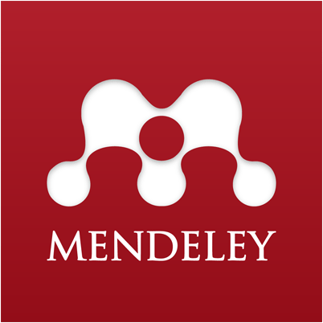
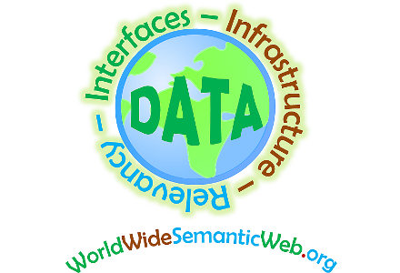
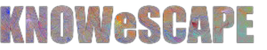

Links
See my presentations on SlideShare

Read my papers on Mendeley
Fork my code on Github
Some more me on the Web:

- Profile on Microsoft research
- Profile on Google Scholar
- Profile on NARCIS
- Publications list on BibBase
- Profile on the KNAW instance of PURE (for >2012 usually most up-to-date source)
Contact
Data Archiving and Networked Services, Anna van Saksenlaan 51, 2593 HW Den Haag, Netherlands
+31 61 45 76494
Projects

Currently, Semantic Web technologies are out of reach of the majority of the world population. The World Wide Semantic Web community has for goal to bridge that gap by adapting our technologies to specific data sharing scenarios where standard tools can not be deployed.
CEDAR is about making the historical Dutch census data easy to use. We look at harmonizing it and publishing it using Semantic Web technologies

Knowescape is a COST action aimed at making sense of ever growing knowledge spaces through visualisation.
Research activities
Some of my research activities grouped by their type: organizing things, helping people with reviewing papers and providing advices.Organization
Conference Chair
- Publication chair of the International Conference on Social Informatics 2012 (SocInfo2012)
- Poster and demo track chair of the Extended Semantic Web conference 2015 (ESWC2015) together with Serena Villata
Member of Organizing committee
- International workshop on Nature inspired Reasoning for the Semantic Web - NatuReS : 2008
- International Workshop of Self-Organization and Approximation Techniques for the Web of Data - SOAT : 2010
- International Workshop on Downscaling the Semantic Web - Downscale : 2012, 2013, 2014
- Tutorial on Linked Data for Development - LD4D : 2012@ISWC
- International Workshop on Artificial Intelligence meets the Web of Data - AImWD : 2012@ECAI, 2013@ESWC
Guest editor
- Semantic Web journal - SWJ : Special issue "The Semantic Web for all"
Contribution
Program Committee Member
- International Semantic Web Conference - ISWC : 2012, 2013, 2014, 2015
- Extended Semantic Web Conference - ESWC : 2011, 2012, 2013, 2014, 2015
- AAAI Conference on Artificial Intelligence - AI : 2015
- International Conference on Knowledge Engineering and Knowledge Management - EKAW : 2014
- International Conference on Emerging Network Intelligence - EMERGING : 2009, 2010, 2011, 2012
- International Workshop on Querying Graph Structured Data - GraphQ : 2010, 2013, 2014, 2015
- International workshop on linked web data management - LWDM : 2011, 2012, 2013, 2014, 2015
- International Conference on Autonomic and Trusted Computing - ATC : 2010
- International Workshop on Usage Analysis and the Web of Data - UseWoD : 2012, 2014, 2015
- International World Wide Web conference - WWW : 2012, 2013, 2014
- International Conference on Intelligent Systems and Applications - INTELLI : 2012, 2013
- International Workshop on Web-scale Knowledge Representation, Retrieval and Reasoning - WEB-KR3 : 2012, 2013, 2014
- International Conference on Social Informatics - SocInfo : 2012, 2013, 2014
- International Conference on Mobile Web Information Systems - MobiWIS : 2013
- International Workshop on Semantic Machine Learning and Linked Open Data Application for Agricultural and Environmental Informatics - SML2OD : 2013
- International Workshop on Semantic Web Information Management - SWIM : 2014
- International Workshop on the Digital Preservation of Research Methods and Artefacts - DPRMA : 2013
- LinkedUp Competition (LinkedUp Challenge - Veni Competition), 2nd LinkedUp competition, 3rd LinkedUp competition
- International Workshop on Semantic Statistics - SemStats : 2013, 2014, 2015
- International Conference on Ontologies, DataBases, and Applications of Semantics - ODBASE : 2013, 2014
- ACM Conference on Hypertext and Social Media - Hypertext : 2014, 2015
- International Workshop on Dataset PROFiling and fEderated Search for Linked Data - PROFILES : 2014, 2015
- Learning and Education with the Web of Data - LILE : 2014, 2015
- International Workshop on Consuming Linked Data - COLD : 2014
- Knowledge Maps and Information - KMIR : 2014
- Second annual Knowescape Conference : 2014
- Workshop on Linking User Data - LiUD : 2014
- W3C workshop on Linking Geospatial Data : 2014
- MAnifestation des JEunes Chercheurs en Sciences et Technologies de l'Information et de la Communication - MAJECSTIC : 2004, 2005, 2006, 2007
- Conférence Ingénierie des Connaissances - IC : 2014, 2015
Additional Conference Reviewer
- International Conference on Electronic Commerce and Web Technologies (EC-WEB)
- International Conference on Knowledge science, Engineering and Management (KSEM)
- AAAI Conference on Artificial Intelligence
Guest editorial board
- Semantic Web journal: Special Call for Linked Dataset descriptions
- Semantic Web journal: 2nd special Call for Linked Dataset descriptions
Journal Reviewer
- Journal of Systems and Software
- Journal of Web Semantics (JWS)
- Semantic Web journal (SWJ)
- Journal on Data Semantics (JODS)
- International Journal of Computer Mathematics (IJCM)
- IEEE Internet Computing
- Journal On Advances in Internet Technology
- International Journal of Pattern Recognition and Artificial Intelligence
- Applied Mathematics and Information Sciences (AMIS)
- International Journal of Pattern Recognition and Artificial Intelligence (IJPRAI)
- International Journal on Semantic Web and Information Systems (IJSWIS)
Discussion
Standardisation efforts
- Participation in the European Commission's ISA Programme to create Core Vocabularies
- Participation in the W3C working group Government Linked Data (GLD)
- Participation in the W3C working group Linked Data Platform (LDP)
- Participation in the W3C working group Data on the Web Best Practices (DWBP)
- Founding member of the W3C community group Development Linked Data (DLD)
Board member
- Technical advisory board of The land portal
- Editorial board of the International Journal On Advances in Internet Technology
- W3C Advisory Council (AC) representative of the VU University Amsterdam